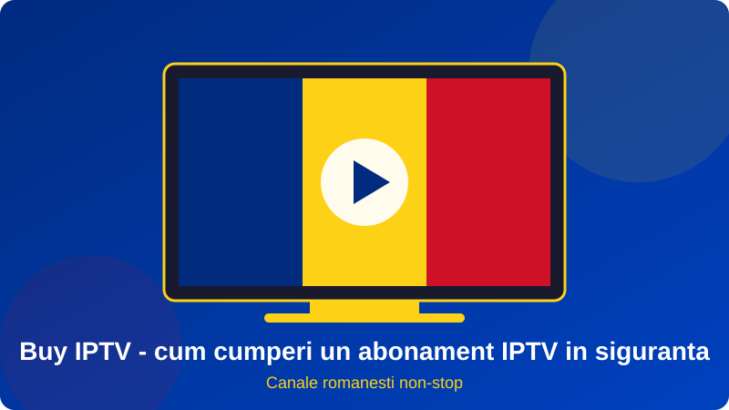
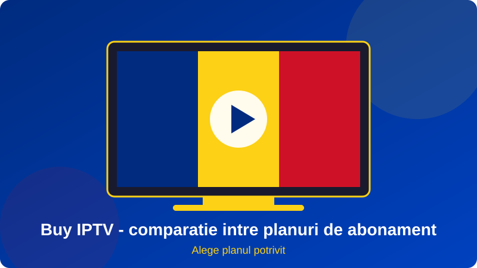

Cand cauti sa buy iptv, te lovesti imediat de sute de oferte: preturi de 2 euro pe luna, promisiuni de 20.000 de canale, vanzatori care apar si dispar peste noapte. Pentru un roman aflat in tara sau in diaspora, miza este simpla: sa vezi Pro TV, Antena 1, Kanal D, Digi Sport sau TVR fara intreruperi, fara surprize si fara sa pierzi banii. Tocmai de aceea, decizia de a buy iptv merita luata cu informatii corecte, nu din impuls.
In acest ghid explicam pe intelesul tuturor cum sa buy iptv intr-un mod sigur: ce inseamna exact un abonament IPTV, ce preturi sunt realiste, cum recunosti un furnizor de incredere, cum platesti, cum instalezi totul in cateva minute si cum eviti cele mai frecvente capcane. Vom vorbi si despre nevoile specifice romanilor din Germania, Italia, Spania, Marea Britanie sau Belgia, care vor aceleasi canale ca acasa.
Indiferent daca esti la prima achizitie sau schimbi un furnizor care te-a dezamagit, la final vei sti exact ce sa intrebi, ce sa verifici si cum sa alegi. Echipa Romania IPTV a ajutat sute de familii sa porneasca televiziunea romaneasca in aceeasi zi, iar experienta lor sta la baza fiecarui sfat de mai jos.

Cuprins
- Ce inseamna sa buy iptv si ce primesti de fapt
- De ce aleg romanii sa buy iptv in loc de cablu
- Cum alegi un furnizor inainte sa buy iptv
- Preturi: cat costa sa buy iptv in 2026
- Pasii concreti pentru a buy iptv
- Metode de plata si siguranta tranzactiei
- Ce dispozitive folosesti dupa ce buy iptv
- Erori frecvente si cum le eviti
- Buy iptv din diaspora: ce trebuie sa stii
- Intrebari frecvente
Ce inseamna sa buy iptv si ce primesti de fapt
Un abonament IPTV (Internet Protocol Television) iti ofera acces la canale TV live, filme si seriale prin internet, nu prin antena sau cablu. Cand decizi sa buy iptv, de fapt cumperi un drept de acces la serverele furnizorului pe o perioada limitata, nu un produs fizic. Calitatea acestui acces depinde de servere, de numarul de canale, de actualizari si de suportul tehnic.
Ce include un abonament bun
Un pachet serios contine canale nationale romanesti (generaliste, stiri, sport, filme, copii, muzica), ghid electronic de programe (EPG), calitate HD sau Full HD, posibilitatea de a revedea emisiuni si suport pe WhatsApp sau email. Daca vrei sa vezi lista completa, citeste ghidul despre iptv romania.
Ce NU primesti cand platesti prea putin
Daca incerci sa buy iptv la un pret simbolic, risti canale care se opresc in timpul meciurilor, servere supraincarcate si lipsa totala a suportului. Serverele, banda si drepturile costa bani, iar un pret nerealist ascunde de obicei compromisuri serioase.
De ce aleg romanii sa buy iptv in loc de cablu
Cablul si satelitul au costuri fixe mari si nu merg in strainatate fara abonamente separate. Un abonament IPTV costa mai putin, se instaleaza in minute si te urmareste oriunde te muti. Iata comparatia pe scurt:
| Criteriu | Cablu / satelit | Daca decizi sa buy iptv |
|---|---|---|
| Cost lunar | Ridicat, cu contract | Redus, fara contract |
| Instalare | Tehnician si antena | Aplicatie, 10 minute |
| Canale romanesti in strainatate | Greu de obtinut | Acelasi pachet oriunde |
| Dispozitive | Un singur televizor | TV, telefon, tableta, PC |
| Flexibilitate | Contract 12-24 luni | 1, 3, 6 sau 12 luni |
Libertate si control
Cu IPTV alegi tu perioada, dispozitivul si momentul. Daca vrei un box dedicat, vezi recomandarile din articolul box iptv, scris special pentru cei care incep de la zero.
Aceleasi canale ca acasa
Pentru familiile din diaspora, cel mai important lucru este continuitatea: jurnalul de seara, emisiunile din weekend, desenele pentru copii si meciurile din Superliga. Un abonament IPTV face exact asta posibil, indiferent de tara de resedinta.
Cum alegi un furnizor inainte sa buy iptv
Inainte sa buy iptv, petrece zece minute verificand furnizorul. Aceste zece minute iti pot economisi luni de frustrare si bani pierduti. Foloseste lista de mai jos ca ghid.
Semne ca furnizorul este de incredere
- Site propriu, cu date de contact reale si politica de rambursare.
- Test gratuit sau perioada de proba inainte de plata.
- Suport in limba romana, usor de contactat pe WhatsApp.
- Preturi afisate clar, fara taxe ascunse.
- Recenzii verificabile si o istorie de cel putin cativa ani.
Semne de alarma
Intreaba despre servere si stabilitate
Un furnizor bun are servere in Europa, redundanta si monitorizare permanenta. Citeste si best iptv romania, unde explicam criteriile folosite pentru a compara ofertele de pe piata.
Preturi: cat costa sa buy iptv in 2026
Pretul este primul lucru la care se uita oricine vrea sa buy iptv, dar el trebuie citit impreuna cu durata si cu calitatea serviciului.
Cat costa in medie
Pentru un pachet cu canale romanesti, calitate HD si suport real, intervalul rezonabil este de 8-15 euro pe luna la plata lunara. Planurile de 6 sau 12 luni coboara costul lunar semnificativ, uneori sub 6 euro, ceea ce le face alegerea preferata a familiilor.
| Plan | Cost lunar orientativ | Pentru cine |
|---|---|---|
| 1 luna | 8-15 euro | Test prelungit, sejur scurt |
| 3 luni | 7-12 euro | Sezon sportiv, perioade limitate |
| 6 luni | 6-10 euro | Familii care vor stabilitate |
| 12 luni | 4-8 euro | Cel mai bun raport calitate-pret |
Cum compari corect ofertele
Nu te uita doar la numarul de canale. Intreaba cate ecrane simultane sunt permise, daca exista EPG, daca primesti actualizari si ce se intampla cand un canal dispare. Cand vrei sa buy iptv, valoarea reala sta in stabilitate, nu in cifre mari pe afis. Poti vedea cum comunitatile mici isi construiesc ofertele si la greek iptv, un exemplu de serviciu dedicat unei diaspore.

Pasii concreti pentru a buy iptv
Procesul este mai simplu decat pare. Urmeaza pasii de mai jos si vei avea canalele active in cel mult cateva ore, de multe ori in cateva minute.
Pasul 1: cere un test gratuit
Inainte sa platesti, cere un test de cateva ore sau o zi. Verifica canalele pe care le urmaresti cel mai des, ghidul de programe si fluiditatea in orele de varf. Daca vrei sa buy iptv fara riscuri, testul este cel mai important pas.
Pasul 2: alege planul si dispozitivele
Decide perioada si numarul de ecrane. Daca ai televizor vechi, ia in calcul un box sau un stick. Pentru recomandari de aplicatii, citeste si ghidul despre big iptv, care explica serviciile mari si compatibilitatea lor.
Pasul 3: plateste si primeste datele
Dupa confirmarea platii primesti un link M3U, date Xtream sau un cod de activare, impreuna cu instructiuni pas cu pas. Pastreaza mesajul si dovada platii.
Pasul 4: instaleaza aplicatia si introdu datele
Instaleaza un player compatibil (de exemplu IPTV Smarters sau TiviMate), introdu datele si asteapta incarcarea listei. In general, durata totala este sub 15 minute.
Pasul 5: verifica si cere ajutor la nevoie
Treci prin cateva canale, testeaza redarea si ghidul. Daca ceva nu merge, scrie imediat suportului. La Romania IPTV primesti ajutor direct pe WhatsApp, in limba romana.
Metode de plata si siguranta tranzactiei
Pentru multi oameni, plata este partea care ii face sa ezite cand vor sa buy iptv. Cu cateva reguli simple, riscul scade la minim.
Metode sigure
Cardul bancar, transferul bancar si portofelele electronice sunt cele mai folosite. Alege o metoda care lasa urme clare si, daca este posibil, protectie pentru cumparator. Cere intotdeauna confirmarea in scris.
Ce nu trebuie sa faci niciodata
- Nu plati unui vanzator care refuza orice dovada.
- Nu trimite bani in avans pentru "ani de zile" fara test.
- Nu da date de card pe site-uri fara conexiune sigura (HTTPS).
- Nu folosi aceeasi parola si pe alte conturi.
Rambursari si garantii
Intreaba clar ce se intampla daca serviciul nu functioneaza. Un furnizor serios ofera fie rambursare, fie extindere a abonamentului. Pentru o privire mai larga asupra criteriilor de alegere, merita sa vezi si tilaa iptv ca termen de comparatie pentru alte piete.
Ce dispozitive folosesti dupa ce buy iptv
Dupa ce ai decis sa buy iptv, ai nevoie de un dispozitiv pe care sa rulezi aplicatia. Vestea buna este ca aproape orice ecran modern functioneaza.
Smart TV si Android TV
Televizoarele Samsung, LG, Sony sau Philips ruleaza aplicatii IPTV direct. Verifica daca modelul tau are un magazin de aplicatii actualizat; altfel, un stick ieftin rezolva problema.
Box Android, Fire Stick si Apple TV
Un box Android sau un Fire TV Stick este cea mai flexibila solutie, cu performanta buna si pret mic. Apple TV ofera un ecosistem foarte stabil, dar costa mai mult.
Telefon, tableta si computer
Poti urmari canalele si pe telefon sau tableta, ideal pentru calatorii. Pe computer functioneaza cu playere precum VLC sau aplicatii dedicate. Un singur abonament acopera de obicei mai multe dispozitive, in limita planului ales.
Erori frecvente si cum le eviti
Majoritatea problemelor apar din cauza grabei si a lipsei de verificare. Iata greselile cele mai des intalnite cand cineva vrea sa buy iptv.
Alegi doar dupa pret
Cel mai ieftin abonament devine cel mai scump daca dispare dupa doua luni. Priveste raportul dintre pret, stabilitate si suport.
Sari peste testul gratuit
Testul iti arata calitatea reala, nu cea promisa. Ignora-l si risti sa platesti pentru un serviciu care nu merge pe reteaua ta.
Ignori viteza internetului
Pentru un canal HD ai nevoie de 8-10 Mbps, iar pentru 4K de minim 25 Mbps. Foloseste cablu Ethernet cand poti si evita ora de varf pe Wi-Fi saturat.
Cumperi de la intermediari necunoscuti
Un revanzator anonim nu iti garanteaza nimic. Alege un furnizor cu prezenta clara, asa cum explicam si in ghidul iptv romania.
Buy iptv din diaspora: ce trebuie sa stii
Peste trei milioane de romani traiesc in afara granitelor, iar televiziunea de acasa este o punte importanta spre familie si limba materna. Daca locuiesti in Germania, Italia, Spania, Marea Britanie, Franta sau Belgia si vrei sa buy iptv, ai cateva aspecte suplimentare de verificat.
Fusul orar si ghidul de programe
Asigura-te ca EPG-ul se ajusteaza la ora locala, ca sa nu pierzi emisiunile preferate. Un furnizor pregatit pentru diaspora stie sa configureze acest detaliu.
Metode de plata accesibile in strainatate
Alege un furnizor care accepta carduri europene sau transfer SEPA. Astfel nu depinzi de metode disponibile doar in Romania.
Servere apropiate si latenta mica
Serverele din Europa reduc intarzierea si creste stabilitatea. Cand decizi sa buy iptv, intreaba unde sunt amplasate serverele si cum se comporta in timpul evenimentelor sportive mari.
Vrei sa buy iptv cu un test gratuit?
Scrie-ne pe WhatsApp si primesti in cateva minute un test pentru canalele romanesti, fara obligatii. Echipa Romania IPTV te ajuta cu alegerea planului si cu instalarea.
Cere test gratuit pe WhatsAppIntrebari frecvente despre buy iptv
Cum pot sa buy iptv in siguranta?
Alege un furnizor care are site propriu, suport in limba romana, preturi afisate clar si un test gratuit inainte de plata. Evita vanzatorii anonimi de pe retele sociale si ofertele extrem de ieftine. La Romania IPTV poti cere un test pe WhatsApp si platesti abia dupa ce vezi ca totul functioneaza.
Cat costa sa buy iptv pentru canale romanesti?
Preturile corecte pornesc, de regula, de la 8-15 euro pe luna si scad la 4-7 euro pe luna daca alegi un plan anual. Un pret mult sub aceasta zona este un semnal de alarma, pentru ca serverele si drepturile de transmisie au un cost real.
Pot sa buy iptv fara contract?
Da. Un abonament serios se plateste pentru o perioada fixa (1, 3, 6 sau 12 luni), fara contract pe termen lung si fara penalizari. Cand perioada se incheie, decizi singur daca prelungesti.
Ce metode de plata pot folosi cand vreau sa buy iptv?
Cele mai comune sunt cardul bancar, transferul bancar si portofelele electronice. Alege o metoda care iti ofera dovada platii si, daca se poate, protectie pentru cumparator. Nu trimite niciodata bani catre persoane care refuza factura sau confirmarea.
Pot sa buy iptv si sa il folosesc in afara Romaniei?
Da, acesta este unul dintre marile avantaje. Abonamentul functioneaza oriunde ai internet stabil: Germania, Italia, Spania, Marea Britanie, Belgia sau Franta. Ai nevoie doar de minim 10 Mbps pentru un canal HD.
Ce dispozitive sunt compatibile dupa ce buy iptv?
Smart TV (Samsung, LG, Android TV), box Android, Fire TV Stick, Apple TV, telefon, tableta si computer. Un singur abonament se poate instala, de obicei, pe mai multe dispozitive, dar numarul de ecrane simultane depinde de plan.
Ce fac daca imaginea se blocheaza dupa ce buy iptv?
Verifica mai intai viteza internetului, foloseste cablu Ethernet daca poti, reporneste routerul si goleste memoria cache a aplicatiei. Daca problema persista, scrie echipei de suport: un furnizor bun raspunde rapid si schimba serverul daca este nevoie.
Este legal sa buy iptv?
Legalitatea depinde de furnizor si de drepturile pentru continutul oferit. Alege servicii transparente, cu date de contact reale si politica clara, nu liste gratuite sau vanzatori care se ascund. Citeste si ghidul nostru despre legalitate din articolul principal despre IPTV.
Concluzie
Sa buy iptv nu trebuie sa fie un risc, ci o decizie informata. Alege un furnizor transparent, cere un test gratuit, compara preturile in functie de perioada si plateste prin metode care iti ofera dovada. Verifica viteza internetului, alege dispozitivul potrivit si pastreaza legatura cu suportul tehnic.
Daca vrei sa continui documentarea, citeste ghidurile despre iptv romania, best iptv romania, box iptv si big iptv. Apoi scrie-ne pe WhatsApp si porneste televiziunea romaneasca chiar astazi cu Romania IPTV.